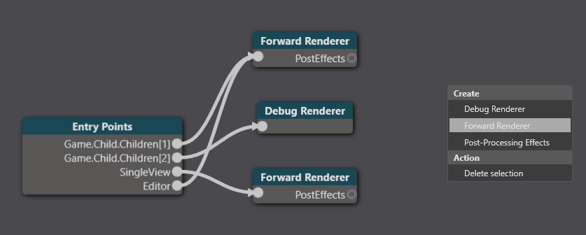

VR でのシーンのプレビュー
VR デバイスでシーンをプレビューするには、エディターを VR が有効なレンダラーに接続します。
そのためには次のようにします。
［Asset view］(既定では下部のペイン) で、Graphics Compositor アセットをダブルクリックします。

Graphics Compositor エディターが開きます。

エディター ノードに接続されたフォワード レンダー ノードを選択します。たとえば、(Stride VR サンプル プロジェクトから取得された) 下のスクリーンショットでは、エディターは下のフォワード レンダラー ノードに接続されています。
フォワード レンダラー ノードを選択し、［Property grid］で［VRRendererSettings］を有効にします。

VR デバイスにシーンのプレビューが表示されます。代わりにモニターにシーンを表示するには、［VRRendererSettings］を無効にします。
VR でシーンをプレビューするために別のレンダラーを作成する
エディターとゲーム ノードが同じフォワード レンダラーに接続されている場合、エディター専用の独立したレンダラーを作成するとよい場合があります。このようにすると、VR デバイスとモニターの間でシーンのプレビューを簡単に切り替えることができます。
Note
エディターとゲーム ノードが既に異なるレンダラーを使用している場合は (VR サンプル プロジェクトのように)、以下の説明に従う必要はありません。
［Asset view］(既定では下部のペイン) で、Graphics Compositor アセットをダブルクリックします。
Graphics Compositor エディターが開きます。
新しいフォワード レンダラー ノードを作成します。そのためには、Game Compositor エディターを右クリックして、［Create］>［Forward renderer］を選択します。

［Entry points］ノードを選択します。

［Property grid］の［Editor renderer］の隣で、作成したフォワード レンダラーを選択します。

エディターがフォワード レンダラー ノードにリンクされます。
VR の設定など、VR でゲームを実行するために使用するフォワード レンダラーを同じになるように、新しいフォワード レンダラーのプロパティを設定します。
Tip
プロパティを右クリックして、プロパティをコピーまたは貼り付けできます。

Note
フォワード レンダラーで VR が有効になっていることを確認します。方法については、「VR を有効にする」を参照してください。
VR デバイスにシーンのプレビューが表示されます。代わりにモニターにシーンを表示するには、新しいフォワード レンダラーのプロパティで［VRRendererSettings］を無効にします。